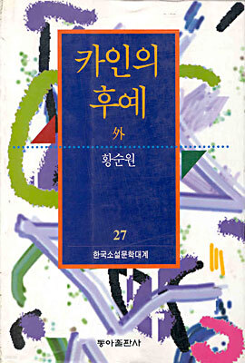
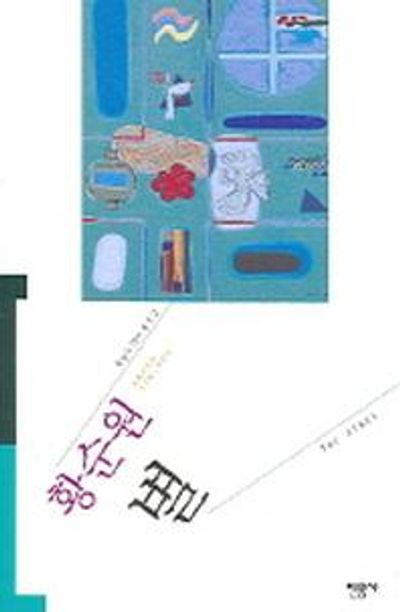

황순원문학촌 소나기마을
전화 031-773-2299, 4499
문학관 소개
소개
소나기 마을은 기존에 보던 문학관의 형식에 그치지 않고 소설의 의미를 되새기며 체험할 수 있도록 꾸며진 테마파크다. 문학의 소통 매개는 글이다. 인터넷의 활발한 보급은 시청각적인 생산물의 다산 못지않게 글의 양산도 기하급수적으로 증가시켜 놓았다. 좋은 글이 쓰레기 더미에 떠밀려 가는 일이 없도록 제대로 지켜야 한다. 양평군과 경희대는 이러한 사명감에서 '황순원'이라는 문학적 상징을 여기에 심어놓은 것이다. 많은 작품들 중에서도 국민 소설로 사랑받는 「소나기」의 배경을 현실적 공간으로 재현해 놓았다.
제1전시실
작가 황순원의 집필 공간과 소자품, 유품을 전시한다. 작가로서, 인간으로서의 삶과 인생을 조명한다.
제 2전시실 – 작가의 대표작의 형상화 및 영상 전시
작가 황순원의 작품 감상 공간으로, 입체적인 비주얼을 체험할 수 있다. 전시 주요 작품 소개와 인물, 배경, 주제 등에 대한 설명이 전시된다.
‘하늘을 담은 유리상자’는 관람객과 소설 「소나기」의 만남을 상징화한 영상을 시연한다.
‘은하수를 찾아가는 징검다리’는 벽면은 「소나기」에 나오는 개울가의 모습으로, 원두막이 있는 시골풍경에 갈대가 흔들리고 물이 흐르는 배경이 바닥영상과 연결된다. 물길 위에 인터랙션이 설치되어 관람객의 발이 시냇물에 감지되면 물 파장이 일고 물고기들의 반응을 체험할 수 있다.
‘판타지아 「소나기」’는 「소나기」의 모티브 요소들로 꾸며졌다. 너른 들판의 꽃과 세찬 소나기, 밤하늘의 별빛과 반딧불이의 춤 등 벽면 영상이 거울에 반사된 전방위적 연출과 바닥의 환상적인 파문을 체험할 수 있다.
황순원 중앙홀
「소나기」에 나오는 수숫단을 형상화한 중앙로비로, 황순원의 친필 이미지가 조형물로 구성되어 있으며 작가의 생애와 작품 연보를 볼 수 있는 공간이다.
문학관 연혁
황순원 유택을 소나기마을로 이장
황순원 초기작품 71점 발굴자료 공개
진행 프로그램
나만의 「소나기」 소년소녀 에코백 꾸미기
황순원 소설 「소나기」를 주제로 나만의 이야기를 더해 에코백 꾸미기
- 기간: 2025년 5월 ~ 12월 (재료 소진 시까지)
- 대상: 전 연령
- 참가비: 무료
2025 소나기마을 문학교실
작가와의 만남, 디카시 강평 등 한국문화예술계 저명인사 초청 강연
- 기간: 2025년 4월 ~ 11월의 매주 목요일
- 참가비: 무료
현충일 특별 체험
태극기 머리핀 만들기 체험과 깜짝 퀴즈로 태극기와 현충일의 의미도 새기고 나라사랑도 실천해보는 경험 쌓기 가능
- 일시: 2025년 6월 6일 (선착순 / 재고 소진 시까지)
- 참가비: 무료
개관 정보
3월~10월: 09:30 ~ 18:00
11월~2월: 09:30 ~ 17:00
휴관일: 매주 월요일, 1월 1일, 설날 및 추석 당일, 그 밖에 군수가 필요하여 정하는 날
위치
찾아가는 길
- 경기도 양평군 서종면 소나기마을길 24황순원문학촌·소나기마을 정류장에서 하차
양수역 경의중앙선에서 하차 후 문호리행 버스를 타고 종점에 하차

소나기
순수하고 덧없는 소년과 소녀의 첫사랑과 그 이별을 통한 아름다운 슬픔을 표현한 작품이다.
카인의 후예
이념 대립이 첨예했던 해방 직후 북한의 토지개혁을 배경으로 인간의 근원적 악(카인의 원죄)과 순수성, 그리고 그로 인해 파멸하는 인간관계를 다룬다.

일월(1~16권)
인간의 근원적 존재 양식을 고독으로 파악하고 그 인간 조건에 반응하는 인물들의 고뇌를 조명하여 구원의 가능성을 어디에서 찾아야 할지에 대한 암시를 던지는 소설이다.
별
죽은 어머니에 대한 그리움과 누이에 대한 애증이라는 복합적인 주제를 다루고 있다. 소년의 오이디푸스 콤플렉스와 절대적인 사랑, 그리고 누이의 죽음 이후의 성장통 등을 통해 인간의 순수성과 내면의 복잡한 심리를 서정적으로 그리고 있다.